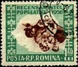
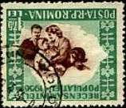
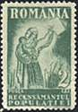
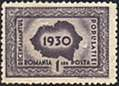
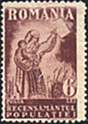
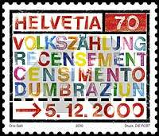
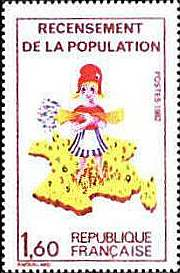

CENSUS ON POSTAL STAMPS
Necessity or Big Brother?
Eternal vigilance is the
price of liberty
(*) Thomas Jefferson (1743 -1876)
Census: periodic governmental count of population (Merriam-Webster, 1989). The idea of this page comes from a discussion in which my talking partner wondered if it is possible to write something interesting about the census stamps. In my opinion it is possible; it is up to my readers to judge if I succeeded or not in this task.
|
 |
 |
 |
The above stamps were issued on December 24, 1930 by the Romanian post (Scott 380-383, Mi. 393-396). I have got them for free from a Romanian collector, because I have bought some stamps from him in a philatelic club in Bucharest, opened daily on the Calea Dorobanti. These are the first Romanian census stamps. They were issued in a perion when the country experienced a long period of economic expansion. The stamp valued 1 Leu shows the map of Romania (at that time 20% bigger than today); the other three stamps show a mother with her child, the mother holding a census card in her left hand. The print run was of 200,000 sets.
|
 |
|
 |
The blue stamp in the middle was issued on January 25, 1948. It is the Scott 678, Mi. 1093, here shown in its overprinted version of 1952; it was printed in 1,000,000 copies. The stamp displays the map of the country, one that can be easily compared with the map shown on the stamp issued in 1930. The missing parts in the North-East, named Basarabia and Bucovina, were in the meantime annexed by the big neighbor and "liberator", the USSR. Some workers and peasants are also shown on the stamp. It is not a simply coincidence this was the first stamp of the newly proclaimed Romanian Popular Republic; the census was a perfectly thought political action indeed. The information collected during this mandatory census was later used in the process of nationalization (i.e. confiscation of private properties by the state, without any compensation).
Eight years later the socialist state, now victorious in each respect over his own people, wanted a confirmation of its politics and organized a new census. This is reflected on the green stamps shown above, Scott 1081a, Michel 1564I, the print run of the normal stamp being of 832,000 pieces. The rare variety displayed above has the center inverted and is for this reason shown in two positions. On the image on the right one can recognize a happy family with two children and the inverted map of Romania. The whole country was actually turned upside down, and this during tragic 45 years.
 |
 |
Being a Swiss citizen, I'd like to show you a Swiss census stamp too, even if it's not so interesting as the Romanian stamps displayed above. The stamp simply shows the world "census" in all four national languages. The text that follows is taken from the official page of the Swiss Post: "The next Swiss Population Census is to be held on 5 December 2000. As well as being an indispensable tool for decision-making and planning, with its questions about social and economic issues that touch on education, town and country planning, it also makes it possible to trace major developments in our country."
The stamp of France was issued in 1982 and shows a symbolic Miss France picking symbolic citizens like flowers. This was already the 31st National Census in a country having a long administrative history (Sc. No. 1823).
The year 2000 was a census year also in the USA. That year's census was "the largest peacetime mobilization effort in U.S. history", accordingly to the federal government. But the census has not only adepts in the USA; let's see what an opponent has to say.
"The Article I, Section 2, of the Constitution prescribe a requirement for a census every 10 years. It specifies that the federal government, under the direction of Congress, shall count the number of people - period. The first census in 1790 included a question about race and residence, but that was about the sum of it. (... )
In mid-March (2000), a census "short form" was mailed to nearly every American. Its seven questions are designed to find out the recipient's name, age, sex, race, relationship to household, whether on not the recipient is Hispanic, and whether his housing is owned or rented. One in six householders were mailed the "long form" - a 53-query marathon on nosy inquiries about everything from disabilities to employment to income. Answering the census is not an option; under the law, it's mandatory. (...) It's not happenstance that as the government's share of our income rises and its toll on our liberties grows, the census gets longer and more intrusive with each passing decade. It's part of the package: a government big enough to give you everything you want is big enough to take away everything you've got. To do all that for you and to you, it has to ask lots and lots of questions" . The excerpts are taken from: Lawrence W. Read, "Inquiring Minds Want to Know a Lot", in Ideas on Liberty, May 2000, p. 17-18.
Sorry by disappointing some readers, but at the best of my knowledge there wasn't an US census stamp in the year 2000 program of the USPS.(*) Thomas Jefferson, American political leader and the main author of the Declaration of Independence of the United States (1776). Vice-President (1797), then President (1801-1809) of the USA.
Created:
10/07/2000. Revised: 04/04/2010. |
|